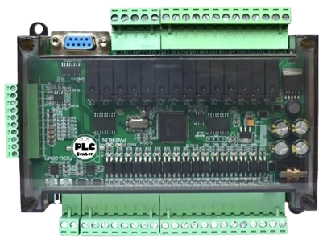

Main Controller of Water Level Control System

This PLC is RS232 communication by default 38400 bps.
Add RS485 communication
Add RTC means real time clock.
| Model | FX3U |
|---|---|
| Type | Relay |
| Input Voltage | 24V DC |
| Output Current | 5A |
| Input Point | 16 |
| Output Point | 14 |
| Analog Input | 6AD |
| Analog Output | 2DA |
| High Speed Count | 6 channels 3K (2 channels 60K optional) |
| Pulse Output | Do not have |
| Floating Point | Support |
| Step Motor | Not support |
| Memory Capacity | 8000 steps |
| Load Type | Direct Download |
| RS485 | Support |
| MODBUS | Support |
| Support Message Display | Yes |
| Support HMI Touch Screen | Yes |
| Software | GX Developer or GX Works2 |
| Input Power | DC24 |
| Number of Steps |
8000 steps; 2 communication ports: 1 RS232 (DB9 serial port is communication port for FX3U protocol 38400,7,E,1; 1 RS485 (485 option) communication protocol can be set to D8120). |
| X Input Element | DC24, X0-X27 input level X0-X5 high-speed counting input port (default is 12K) |
| Y Element Output |
Y0-Y3 transistor output, output current 500mA, plus diode can achieve 4A,
100K 4 channel pulse output. Y4-Y11 common transistor output can be directly driven 3A 24V load. |
| Analog Input |
6 Analog input, 12 Bit Precision, A0-AD2 : 0-10V A3-AD5 : 0-20mA Read Analog RD3A Official Instructions |
| Analog Output |
2 Analog Output, 12 Bit Precision, Voltage Output : 0-10V Analog Output Voltage WR3A Instructions |
| Intermediate Relay M |
M0-M3071, Power loss scope can be set to save power. Range M0-M1023 |
| Stepper Point S |
S0-S1023, Power Down save range can be set S0-S1023, Default is S500-S999. |
| 100MS Timer |
T0-T199, Cumulative Power Down Record T184-T199 |
| 10MS Timer |
T200-T249, Cumulative Power Down Record T246-T249 |
| 1MS Timer |
T250-T383, T250-T255 are collector type. |
| 16-bit Counter |
C0-C199, Power Down Record C100-C199 |
| 32-bit Counter |
C200-C219, Power Down Save C220-C234 |
| High Speed 32-bit Counter |
C235-C255: C235-C240 for single-phase counter, non harmonic; C241-C240 single-phase frequency counter doubling; C247-C249 Dual Phase Counter, Non harmonic; C250-C252 for 2-Phase doubling frequency counter; C253-C255 biphasic counter, 4 doubling frequency; |
| Register D |
D0-D7999, Power-Down Record Range can be set to D0-D7999 |
| Indirect Addressing Pointers V, Z | V0-V7, Z0-Z7 |
| P Subroutine JUMP Number | P0-P63 |
| I Interrupt |
X0-X5 External Interrupt. Timing Interrupt (1MS units) Timing Interrupt. |
| Special M Element |
M8000 Work Normally Closed, M8002 Power Pulse, M8011 10MS Pulse, M8012 100MS Pulse, M8013 1S Pulse, M8014 1MIN Pulse |